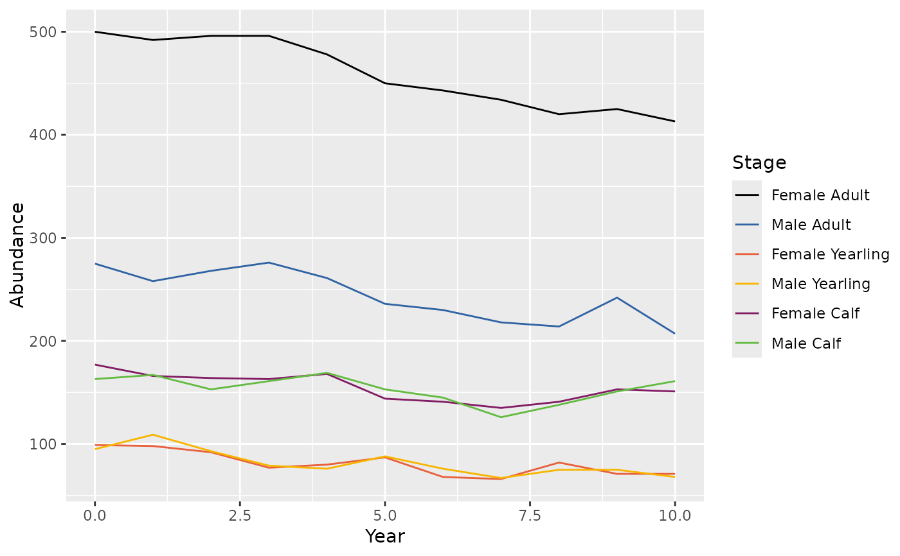
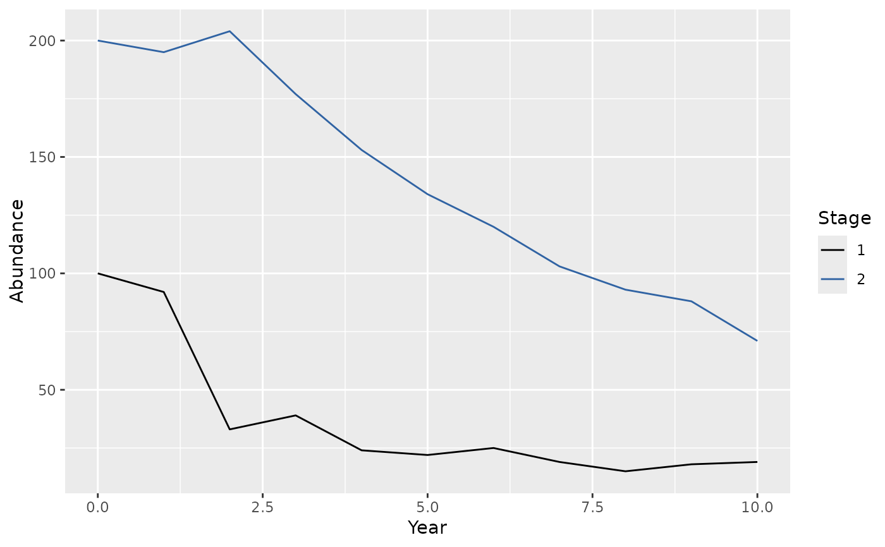

Plots population abundance by period and stage.
bbs_plot_population(x, ...)
# S3 method for class 'data.frame'
bbs_plot_population(x, annual = TRUE, ...)
# S3 method for class 'bbou_population'
bbs_plot_population(x, annual = TRUE, nperiod_within_year = 12, ...)
# S3 method for class 'bbou_simulation'
bbs_plot_population(x, annual = TRUE, alpha = 0.5, ...)
# S3 method for class 'bbou_population_caribou'
bbs_plot_population(x, annual = TRUE, ...)A ggplot object.
A ggplot object.
A ggplot object.
A ggplot object.
bbs_plot_population(data.frame): Plot population abundance by period and stage for a data frame (abundance data.frame in output bbs_simulate_caribou()).
bbs_plot_population(bbou_population): Plot population abundance by period and stage for a matrix (output of bbs_population_caribou()).
bbs_plot_population(bbou_simulation): Plot population abundance by period and stage for a matrix (output of bbs_simulate_caribou()).
bbs_plot_population(bbou_population_caribou): Plot population abundance by period and stage for a matrix (output of bbs_simulate_caribou()).
survival <- bbs_survival_caribou(0.84)
fecundity <- bbs_fecundity_caribou(0.7)
x <- bbs_simulate_caribou(survival, fecundity = fecundity)
bbs_plot_population(x[[1]]$abundance)

pop0 <- c(100, 200)
survival <- bbs_survival(intercept = logit(c(0.95, 0.98)))
fecundity <- bbs_fecundity(intercept = c(NA, logit(0.4)))
survival_mat <- bbs_matrix_survival_period(survival$eSurvival)
birth_mat <- bbs_matrix_birth_year(fecundity$eFecundity)
age_mat <- bbs_matrix_age(c(2, 2))
x <- bbs_population(pop0,
birth = birth_mat,
age = age_mat,
survival = survival_mat
)
bbs_plot_population(x)

survival <- bbs_survival_caribou(0.84)
fecundity <- bbs_fecundity_caribou(0.7)
x <- bbs_simulate_caribou(survival, fecundity = fecundity, nsims = 3)
bbs_plot_population(x, alpha = 0.7)
survival <- bbs_survival_caribou(0.84)
fecundity <- bbs_fecundity_caribou(0.7)
x <- bbs_population_caribou(survival, fecundity = fecundity)
bbs_plot_population(x)